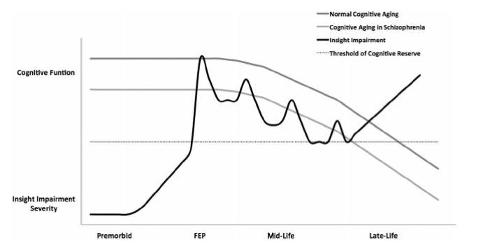

78 노년기 조현병의 개념
78.1 노년기 조현병의 사회적 부담
노년기 조현병이란 조현병 증상이 언제 처음으로 시작되었는지와는 무관하게 조현병을 앓고 있는 노인 환자를 말한다. 즉 젊었을 때 발병하여 노인이 된 환자 뿐 아니라, 노년기에 처음 발병한 환자를 모두 포함한다. 이 환자들을 무시할 수 없는 이유는, 일반 인구집단에서 노령층이 급속히 증가하면서 조현병을 앓는 노인의 비율도 전례없는 양상으로 증가하고 있기 때문이다.[1]
노년기 조현병 환자를 돌보는데 드는 사회적 노력과 비용은 치매 환자에 버금가는 것으로 추정된다.[2] 모름지기 조현병은 모든 연령대에서 가장 비용이 많이 드는 정신질환에 속하며[2,3], 노인 조현병 환자에서 연간 건강관리 비용을 치매, 우울증, 그리고 신체 질환과 비교한 연구에 의하면, 조현병의 연간 관리 비용이 가장 높았다.[4] 비용의 대부분은 사설요양원과 재활 시설 재원비로 들어갔다. 가족이 환자를 돌보는 비율이 줄어들면서 경제적 부담은 점점 더 늘어날 전망이다.
78.2 노년기 환자의 증상 특성
78.2.1 양성 증상
조현병은 나이가 들수록 점점 악화되어 인격의 황폐화에 이르는 병으로 인식되어 왔다. 크레펠린은 조발성 치매가 호전되는 비율은 17% 이하라고 단정하였으며[5], DSM-III에는 조현병의 경과 중 가장 흔한 것은 삽화가 반복되면서 점차 악화되는 경우라고 적혀있다. 7년후 발간된 DSM-III-R에도 “질병의 말기에는 잔여증상이 약화된다”고 언급되고 있다.
그러나 이런 비관적인 전망은 수많은 역학 조사를 통해 조금씩 변화하고 있다. 좀더 희망적인 전망을 갖게 된 데는 오랜 동안 조현병의 결과를 분석해온 Courtenay Harding의 역할이 크다. 그녀가 중심이 된 “The Vermont Longitudinal Research Projects”라는 연구는 버몬트 주립병원에서 진단 받은 조현병 환자 118명을 32년간 전향적으로 추적하였다. 연구 시작 후 25년 정도가 지나 면담한 82명의 참가자 중 68%는 더 이상 조현병 증상이나 징후가 없었고, 45%는 어떤 정신질환의 징후도 없었다.[6] Harding은 이후 유사한 디자인의 연구 결과들을 종합하였다. 총 10개의 연구에서 2,429명의 환자를 평균 28년이상 추적하였는데, 환자 중 46~84%는 세월이 흐르면서 양성 증상이 유의하게 감소하는 소견을 보였다.[7] 마찬가지로 세계보건기구(WHO)의 주도 하에 행해진 15-, 25년 추적 조사에서도 대상 집단의 절반 가량이 “전반적으로 회복”된 것으로 간주되었다.[8] 이러한 연구들은 젊었을 때 발병했던 조현병이라도 노인이 되면 전반적으로 상태가 좋아진다는 것을 시사한다.
Andreasen 등[9]이 관해(remission)의 조작적 정의를 도입한 이후에는 노인 조현병 환자를 대상으로 관해 비율에 대한 연구가 진행되었다. 북미에서 시행된 두 개의 연구에서는, 젊었을 때 발병했던 환자가 노인이 되었을 때 관해상태에 이를 비율이 50%에 육박한다고 보고되었으나[10,11], 네덜란드에서 시행된 연구에서는 시설에 수용된 환자와 늦게 발병한 환자가 포함되서인지 29%에 그치고 있었다.[12] 뉴욕 시에 거주하는 지역 사회 표본을 대상으로 한 종적 추적자료에 따르면, 나이가 들면서 관해에 이르는 환자도 있지만, 다시 재발하는 환자도 적지 않아서 횡단적인 관해율은 40% 정도였지만, 추적 기간 내내 관해를 유지한 환자 비율은 그보다 훨씬 적었다.[13] 이러한 객관적 자료를 바탕으로 크레펠린 시대의 비관론은 조심스러운 낙관론으로 대체되었다. 그러나 여전히 관해에 도달한 환자의 비율이 절반 정도로 예상보다 높다는 뜻이지, 모든 환자가 “젊었을 때 기승을 부리다가 나이가 들면 저절로 좋아진다”는 것은 아니다.
78.2.2 음성 증상 및 우울 증상
일부 신중론자들은 비록 양성 증상은 노년기에 접어들면서 감소할 수 있지만, 대신 음성/결핍 증상의 비중이 증가하여 여전히 환자들의 기능회복과 사회복귀를 가로막는다고 주장한다.[14] 그러나 실제 노년층을 대상으로 한 연구를 살펴보면, 그 결과가 너무 다양하여 일관된 결론을 얻을 수 없었다.[8,15,16] 기존 선입견과 차이나는 부분은 노인 환자라 해도 젊은 환자에 비해 월등하게 음성 증상이 많은 것도 아니요, 한번 음성 증상이 심했다고 해서 회복될 가능성이 전혀 없는 것도 아니라는 점이다.
이에 비해 노인 환자에서 우울증의 병존 비율은 매우 높은 편이다. 지역사회에 거주하는 중년과 노년기 조현병 환자에서 우울증 유병률은 44~75%에 육박하였다.[17–19] 노인 환자에서 우울증이 많은 것은 충분히 이해가 간다. 평생 병을 앓아오면서 해체된 가정이나 잃어버린 기회에 대해 슬퍼하며, 독립적인 생활능력을 상실하고 누군가에게 의지해야 하는 삶에 염증을 내기 쉽상이다. 이는 노년기 조현병 환자가 음성 증상이 심해지면서 감정적으로 둔화되고 위축되어 우울증 조차 느끼지 못한다는 기존의 통념과 배치된다.[20,21] 이들의 감정은 여전히 살아있으며, 후회와 좌절, 무의미와 절망에 사로잡혀 있을 가능성이 높다.
78.2.3 인지 증상
78.2.3.1 정상대조군과의 차이
노인 조현병 환자들은 인지 기능에 상당한 결함을 보인다.[22] 이는 신경발달학적 가설과 신경퇴행적 가설 사이의 대립을 가져오기도 했는데, 전자에 따르면 인지 기능 저하는 이미 초발 삽화때부터 두드러져 시간이 지난다고 해도 크게 변함이 없어야 하며, 후자에 따르면 양성 증상과는 별개로 점진적 인지 기능 저하가 나타나야 한다. 인지 기능의 변화를 종적으로 추적한 연구들을 종합하여 분석한 바에 의하면[23], 조현병 환자들은 정상 노화에 동반되는 인지 기능 저하가 좀더 앞당겨 나타난다. 이는 인지 기능 뿐 아니라 전반적인 신체 기능과 관련된 가속화된 노화(accelerated aging) 과정과 연관이 있는 듯 하다. (article-01-06.html#증상별-경과) 그러나 반론이 없는 것은 아니다. 인지 기능 저하의 속도가 정상인보다 빠른 것인지, 아니면 애초에 젊었을 때부터 인지 기능 저하가 있어왔기 때문에 정상인과 똑같은 속도로 저하되어도 정상인을 따라잡을 수 없는 것인지는 불분명하다. 가속화된 노화를 주장하는 쪽에서는, 신체 기능의 저하가 가속화되는 것처럼 인지 기능 저하 역시 가속이 붙어 점점 더 격차가 벌어진다고 말한다. 그러나 Rajji 등[24]이 조사한 바에 따르면, 19~79 사이의 조현병 환자를 종적으로 추적하였을 때, 인지 저하의 속도는 정상인과 유사하였지만, 모든 연령대에서 인지 점수의 차이가 있었다고 한다. 즉 출발점 자체가 다르다는 뜻이다.
노인 조현병 환자와 대조군을 비교하면 전반적인 인지 영역에서 차이가 나지만, 특히 관리기능, 시공간 능력 및 언어유창성이 두드러지게 떨어지며, 그에 비해 기억, 주의력 등은 연구마다 결과가 일관되지 않았다. 연구자들의 인상은 나이들면서 떨어지는 특정 기능이 따로 있는 것은 아니지만, 고차원적 기능부터 대조군과의 차이가 두드러지기 시작한다는 것이다.[22,25]
만약 나이가 들면서 점점 정상대조군과의 격차가 심해진다고 가정하더라도, 이를 신경퇴행 과정이 아니라 사회적 경험 부족과 인지적 자극의 감소와 같은 심리사회적 원인으로 이해할 수도 있다. Rajji 등은 주거 형태에 따라 경과가 달라짐에 주목하였다.[24,25] 70세 이상 노인 조현병 환자들은 주거 환경과 상관없이 인지 저하가 분명해보였으나, 지역 사회에 거주하는 65~70세 환자들은 정상 노인과 크게 차이나지 않았다. 이에 비해 오랫동안 시설에 수용되어 치료받았던 환자들은 65세 이상이 되자 정상 노인들보다 현저한 인지 기능 감퇴를 보였다.[26]
78.2.3.2 독립된 아형일 가능성
또 다른 학자들은 전혀 양상이 다른 하위 집단이 존재하기 때문에 평균을 조사하는 것은 의미가 없다고 주장한다. 즉 모든 환자가 가속화된 인지 저하를 보이는 것이 아니라 그러한 집단이 따로 있다는 것이다. Thompson 등이 지역사회 거주 조현병 환자를 종적으로 추적한 결과 절반 정도는 인지 기능이 안정되게 유지되었으며, 40%는 약간의 저하, 그리고 10%는 급격한 저하를 보였다. 안정된 기능을 유지하였던 절반의 환자는 정상대조군과 비교해도 크게 떨어지지 않았다.[27] 이 주장이 맞다면 모든 환자에게 획일적인 인지 재활을 시행하는 것은 의미가 없고, 개개인의 요구와 능력에 맞는 인지교정 프로그램이 필요하다고 하겠다.[13]
이러한 개인 차는 발병 연령과는 크게 상관없는 것 같다. Vahia 등[28]은 발병 연령이 빠르거나 늦거나 정상 대조군에 비해서 인지 점수가 떨어진다고 하였다. 유병 기간이 길다고 해서 더 인지 기능이 떨어지는 것 같지는 않으며, 늦게 발병한 환자는 적지 않은 경우 뇌의 기질적 문제를 동반하고 있기 때문에 발병 시점에 이미 인지 기능이 떨어져 있을 가능성이 크다. 따라서 인지 프로파일로 젊었을 때 발병한 환자와 나이들어 발병한 환자를 구분하기는 어렵다.[25] 그러나 나이들어 발병한 환자는 사회적 인지가 상대적으로 잘 유지된다는 보고가 있다.[29,30]
78.2.3.3 치매로의 진행 위험
조현병 환자가 일반인에 비해 치매 위험이 높은 지는 확실히 알려지지 않았다. 문제는 노인 조현병 환자의 절반 정도는 MMSE 기준으로 이미 경도 치매에 해당된다는 것이다.[31] 그러나 단순히 MMSE 점수가 떨어진 것과 치매는 별개의 것이므로, 실제로 치매로 발전할 위험이 얼마나 되는지는 의문이다. 연구에 따라 치매 위험이 높지 않다는 보고에서부터 두 배 이상 높다는 보고까지 다양한 주장이 제기되었다.[23,32] 최근에는 좀더 규모가 큰 역학 연구가 이루어졌는데, 덴마크에서 시행된 코호트 연구에서는 조현병 환자가 치매에 이를 위험은 대조군의 2배 정도로 나타났다. 이 위험비는 80세 이상의 고령이 되면 낮아지는 것으로 보아, 조현병 환자가 좀더 일찍 치매 상태에 도달한다고 볼 수 있다.[33] 자료를 종합한 메타 분석에서도 위험비는 역시 약 2배 정보로 보여졌다.[34] 물론 조현병 환자는 동반된 대사증후군 비율이 높기 때문에 이러한 위험인자가 작용했을 가능성이 있으며[35], 또한 장기간 사용할 수 밖에 없는 약물의 영향도 배제할 수 없다.[36] 결국 조현병 자체가 환자를 치매로 몰고 가는지는 결론이 나지 않았다.
알츠하이머 치매의 증거를 찾기 위해서라면 MMSE를 측정하는 것보다 직접 조직학적 변화를 관찰하는 것이 정확할 것이다. 이미 1997년 Baldessarini 등은 당시까지 입수 가능했던 연구 결과를 종합한 끝에, 조현병 환자의 뇌에서 알츠하이머 치매의 신경병리가 발견되는 비율이 대조군에 비해 더 높지 않다고 결론지었다.[37] 살아있을 때 심한 인지 장애를 보였던 조현병 환자의 뇌를 부검하였을 때도 알츠하이머 치매의 신경병리가 발견되는 비율은 9%에 불과하였다.[38] 따라서 설령 노인 조현병 환자가 MMSE나 기타 인지 검사를 통해 치매로 분류되더라도, 엄밀한 의미에서 진짜 치매에 걸렸다고 단정하기 어렵다. 인지 저하가 있더라도 그 기전은 전형적인 치매와는 다르다고 보는 것이 맞다.
78.2.3.4 항정신병 약물의 영향
좀더 다급한 문제는 항정신병 약물이 인지 저하를 앞당길 것이냐 아니면 막아줄 것이냐는 문제이다. 항콜린 효과가 강한 정형 약물이 인지 기능을 떨어뜨린다는 것은 잘 알려진 사실이지만, 비정형 약물은 여전히 논란이 많다. 논란의 발단이 된 것은 약물의 용량이나 복용 기간이 뇌 피질 위축 정도와 상관관계에 있다는 연구결과 였는데, 그렇다고 약물이 직접 뇌 위축의 원인이었다고 보기는 어렵다.[39]
실험실 연구를 통해서 할로페리돌과 퀘티아핀이 베타 아밀로이드 단백질의 생성 및 결집을 방해한다는 것이 밝혀졌다.[41] 이외에 올란자핀, 리스페리돈, 팔리페리돈 역시 아밀로이드 단백질에 의한 PC12나 SH-SY5Y 세포의 산화 스트레스와 그로 인한 세포자멸사(apoptosis)를 막아준다.[42,43] 최근에는 항정신병 약물을 항치매제로 개발하기 위한 기초적 연구가 진행되고 있기도 하다.[44] 그러나 아직 항정신병 약물이 치매의 진행을 늦춘다는 직접적 증거는 없다.
신경퇴행 가설에 따르면, 조현병 환자가 나이를 먹어가면서 재발을 거듭하면 점점 더 가속화된 인지 기능 저하를 보여야 한다. 그러나 실제 역학 자료에 따르면 이들의 인지 저하 속도 자체가 정상인보다 빠르다는 증거는 찾기 힘들다. 그보다는 발병 당시에 이미 인지 기능이 떨어져있기 때문에 나이가 들어도 여전히 정상 대조군과는 격차가 벌어진다는 관찰이 더 많다. 하지만 10% 정도의 일부 환자에서는 그야말로 가속화된 노화 현상이 벌어지면서 좀더 빨리 치매에 이르게 된다. 이러한 환자를 일찍 찾아내는 것은 임상가들의 숙제라 하겠다.
78.2.4 지역사회 통합과 사회적 기능
정신질환을 갖고 있든 아니든, 노인이 되면 사회적 행동 반경이 작아지고 점점 더 소외되기 쉽다. 더구나 급격하게 발전하는 정보, 기술 사회에서, 사회적 기능을 원활히 수행하려면 다양한 기술을 학습해야 한다. 인터넷과 모바일 네트워크를 중심으로 사회 활동이 점점 비대면으로 이뤄지면서 기술 습득에 뒤쳐진 노인 들은 새로운 사회에 적응하기 어렵다.
과거의 사회적 기능이란 적절한 의사소통 기술, 자기 주장이나 공감 능력, 충동 조절 능력 등만 갖춰지면 문제없이 해낼 수 있었다. 그러나 조현병 환자는 이 모든 인지 기능에 문제를 보이기 때문에, 환자 대부분은 젊었을 때부터 정상 대조군에 비해 사회적 기능이나 성취도가 떨어진다. 그러나 이 역시 환자마다 수준이 천차만별로 다르기 때문에 획일적으로 논할 수는 없다.[12]
젊은 조현병 환자는 부모의 보살핌을 받는 경우가 많기 때문에 사회적 기능이 떨어지더라도 어떻게든 살아나갈 수 있다. 그보다 이후에는 형제들 및 기타 친지를 통해 도움을 받을 수 있지만, 가족을 이루지 못한 상태에서 노인이 되거나 설령 가족을 이뤘다 해도 해체되었다면 의지할 수 있는 대상이 없어진다. 그나마 사회적 기능이 남아있는 환자라면 복지 제도를 이용하면서 적응하겠지만, 그렇지 못한 환자는 생존 자체가 위기에 몰리게 된다. 설령 복지 제도의 힘을 빌리더라도, 공통체 속에서 적응하는 법, 도움을 주는 봉사자에게 의지하는 법 등은 여전히 온전한 심리사회적 기능을 필요로 한다.
뉴욕 시에 거주하는 중장년 및 노년 조현병 환자를 대상으로 한 연구에서 대조군과 비교했을 때, 사회 통합 척도에서 더 낮은 점수를 받았다.[45] 같은 대상자를 종적으로 관찰해보았더니 통합 정도가 항상 일정한 것이 아니라, 정상 수준과 낮은 수준을 들락날락 하였다.[46] 이는 환자들이 중장년이 되었더라도 안정상태에 놓여진 것이 아니며, 악화와 회복의 기회가 모두 존재한다는 뜻이다. 조현병 환자라도 젊었을 때 고용 지원 프로그램을 통해 사회 활동을 활발히 했던 환자는, 나이 들어서 좀더 사회 기능을 잘 유지할 가능성이 있다.
78.2.5 삶의 질
증상의 심각도 및 기능 수준의 저하는 환자들이 정상 사회생활에 적응하는 것을 방해하지만, 그렇다고 이들이 내내 절망상태에만 빠져있는 것은 아니다. 어디까지나 삶이 질은 환자 자신의 주관적 평가이기 때문에 객관적 소견과는 차이가 날 수 있다. 예를 들어 청장년기 조현병 환자는 삶의 만족도와 삶의 질을 정상대조군에 비해 매우 낮게 평가하고 있지만, 노인 조현병 환자들은 비교적 높은 수준의 삶의 만족도를 보고한다.[47] 삶의 질과 삶에 대한 만족도는 조금 차이가 있다. 자신의 삶의 질이 높다고 평가하는 환자들은 적지만, 현재 삶에 만족한다고 답하는 환자의 비율은 높은 편이다. 또한 양성 증상, 음성/인지 증상, 우울 증상 등은 삶의 질과 간접적인 상관관계에 놓여있으나[48,49], 삶의 만족도는 반드시 그렇지는 않다. 노인 조현병 환자는 같은 연령대의 우울 장애, 불안 장애 또는 신체형 장애 환자들에 비해 더 나은 주관적 안녕을 보고한다.[50] 물론 삶의 질에 대한 평가에서도 청장년 환자에 비해 더 좋다고 보고한다.[51] 이는 평생에 걸쳐 조현병 환자로서의 삶에 적응해왔고, 기대수준이 낮아졌기 때문이 아닐까 생각해본다.
일반인은 물론 의사들 역시 노인 조현병 환자는 사회로부터 고립되고 가족으로부터 단절되었을 것으로 예상하지만, 이런 예상에 의문이 제기되었다.[52] 조현병 환자는 대조군에 비해 가족을 일구거나, 동거하는 반려자가 있을 가능성이 적지만, 사회적 접촉이 완전히 끊어진 것은 아니다. 확대 가족의 존재나 접촉 횟수, 대인관계 어려움의 정도, 행정적 지원을 구하는 정도에서 정상 노인에 비해 크게 차이나지 않는다는 보고도 있다. 그러나 이 역시 모든 노인 조현병 환자에게 획일적으로 적용할 수 있는 문제는 아닌 것 같다. 기능이 좋은 환자도 있고, 그렇지 못한 환자도 있을 것이며, 환자의 요인과는 상관없는 가족 내부의 요인이 작용할 수도 있다. 또한 이러한 양상은 사회문화적 배경에 따라 크게 차이날 수 있다. 현대에 접어들면서 가족의 해체는 가속화되고 있지만, 대신 복지 시스템을 통해 유사 가족의 형태를 이룰 기회는 오히려 더 많아졌다.
78.2.6 병식
초발 환자는 병식이 없기 마련이고, 재발을 반복하면서 자의반 타의반으로 서서히 병식을 갖추게 되는 것이 보통이다. 그렇다고해서 노년에 이른 조현병 환자가 완전한 병식을 갖추게 되느냐 하면 그렇지는 않다. 오히려 병식의 경과는 거꾸로 된 U자형 곡선을 그리는데, 중년기에 가장 병식이 호전되다가 노년기에는 다시 저하된다고 한다.[53–55] 이러한 현상이 노화에 따른 점진적 인지 기능 저하와 관계있는 지는 아직 알 수 없다.
병식은 단순히 “있다/없다”와 같은 이분법적 개념으로 보기는 어려우며, 몇 가지 요인으로 나눠 생각해야 한다. 정신 질환을 앓고 있다는 것을 부정하면서도, 그 결과로 자신에게 불리한 결과가 초래되었고, 약물 치료를 하면 이를 막을 수 있다고 인정할 수 있으며, 그 역도 역시 가능하다. 노년이 되면 주변과 부딪히고, 사회적으로 물의를 일으키는 경우가 줄어들기 때문에, 질병에 대한 인식이나 약물 치료의 필요성을 부인할 가능성이 높아진다. 또한 인지 능력의 감소로 약을 왜 먹고 있는 지에 대한 인식 자체가 사라질 수도 있다. 하지만 역으로 평생 해왔던 약물 치료를 굳이 거부할 필요를 느끼지 못하는 경우도 많다. 이러한 현상 때문에 병식 자체는 줄어든다 하더라도, 치료 순응도에 문제가 생길 정도로 악화되지는 않는 것 같다.

78.2.7 항정신병 약물 치료의 의의
초발이나 발병한지 얼마 되지 않는 환자의 임상 상태나 기능 수준, 삶의 질은 약물 치료의 성공 여부에 전적으로 달려있다. 그러나 이러한 환자가 노인이 되었을 때의 장기 예후가 약물 치료에 의해 얼마나 달라지는 지는 의문의 여지가 남는다. 조현병 약물 치료의 역사는 새로운 희망과 뒤따르는 실망의 연속이었다. 초발 환자들에게 있어 정신병의 비치료 기간을 최대한 줄이면 장기적 예후를 바꿀 수 있다는 신념은 조기 정신증 사업의 근간이 되었으나, 모든 연구가 이를 뒷받침하는 것은 아니었다. 문제는 정신과 의사의 상담을 받기 훨씬 전부터 이미 인지 기능 저하는 시작되어 왔고, 이를 회복시킬 방법이 막연하다는 것이다.
노인 환자들의 상태는 결국 조현병의 장기적 예후와 깊은 관련이 있다. 초발 환자에서의 조기 발견 및 예방과 마찬가지로, 얼마나 공격적인 치료를 해야 장기적 예후를 바꿀 수 있느냐는 문제이다. 이곳에서도 긍정론과 비관론이 교차한다. 신경퇴행 이론은 질병 자체가 신경계에 독성을 띤다고 믿는다. 이는 항정신병 약물 치료에 반응하지 않는 치료저항성 환자에 대한 연구, 그리고 순응도 등의 문제로 인해 재발을 반복한 환자에 대한 연구로 뒷받침된다. 초창기에 CT를 이용해 뇌실 크게를 연구한 자료에 따르면, 치료저항성을 보이는 환자와 그렇지 않은 환자의 뇌실 크기를 4년간 추적 조사했더니 전자는 점진적인 뇌실 확장 소견을 보였고, 후자는 그렇지 않았다.[56] 뇌실 크기의 변화는 인지 수행과 상관성이 있기 때문에[57], 이를 종합하면 치료가 잘 되지 않으면 지속적으로 뇌 용적이 감소하면 인지 저하가 심해진다는 뜻이 된다. 이는 젊었을 때 증상의 심각도가, 노인이 되었을 때의 인지 기능 저하를 예측할 수 있다는 결과와 부합한다.[26,58]
물론 이를 단순히 치료가 제대로 되었으면 기능 저하를 막을 수 있었다고 해석하기에는 무리가 있다. 현대의 학자들은 치료저항성은 환자 자신의 고유한 특성이라고 본다. 즉 애초에 치료저항성 환자이기 때문에 인지 기능이 점점 저하되는 것이지, 치료의 잘잘못과는 관계가 없다는 뜻이다. 또한 치료가 안 되다 보니, 입원이나 시설에 수용되는 기간이 길어지고, 따라서 사회적 자극을 받을 기회가 없었다는 반론 또한 가능하다.
그러나 치료의 역할에 대한 긍정적인 견해가 아주 없는 것은 아니다. 네덜란드에서 행해진 연구에서는 조현병 환자 96명과 정상대조군 113명을 초발했을 때부터 5년간 추적조사하였다.[59,60] 연구 기간 동안 환자들은 점진적인 뇌 용적의 감소(특히 좌측 전두, 측두엽)를 보였으며, 이는 재발 횟수와 상관관계를 보였다. 흥미로운 것은 클로자핀의 사용할 수 밖에 없었던 환자는 그렇지 않은 환자에 비해 뇌 용적 감소가 심했는데, 그러면서도 관찰기간 동안 사용한 클로자핀의 누적 용량과 뇌 용적 감소의 정도는 음의 상관관계를 보였다는 것이다. 즉 이들 치료저항성 환자들이 처음부터 뇌 용적 감소가 심했지만, 클로자핀이 신경보호 효과를 나타낸 것 같다는 뜻이다.
Boonstra 등[61] 역시 초발 환자들의 뇌 용적 변화를 5년간에 걸쳐 관찰하였다. 정신병의 비치료 기간은 정신병의 심각도와는 관련되어 있었지만, 뇌 용적과는 관계가 없었다. 5년 후 피질 위축의 정도를 결과변수로 놓았을 때, 정신병의 비 치료 기간 보다는 그 동안의 치료 성과가 더 예측력이 높았다. 이러한 연구들에서 공통적으로 관찰된 사실은 피질 위축과 사회적 기능 수준간에 밀접한 관계가 있다는 것으로, 이렇게 따지면 적극적 치료가 피질 위축을 막고 사회적 기능을 보존시킨다는 결론에 도달할 수 있다.[60]